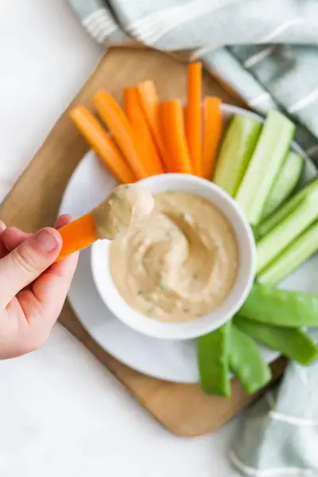

Satay Sauce

Ingredients
- 3/4 cup 200g Natural Peanut Butter (See Note 1)
- 1/2 cup 125ml Coconut Milk, (canned)
- 1 tbsp Coriander (cilantro), finely chopped
- 1 tbsp Soy Sauce (See Note 2)
- 1 Lime, juice of
- 1/2 tsp Garlic, finely chopped
- 1/2 teaspoon Crushed Ginger
Steps
- Mix all the ingredients in a bowl until well combined.
Recipe by Healthy Little Foodies, from Healthy Little Foodies. Saved here for personal use; the original has the full notes, tips and photos. Open original